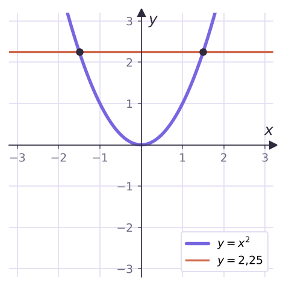
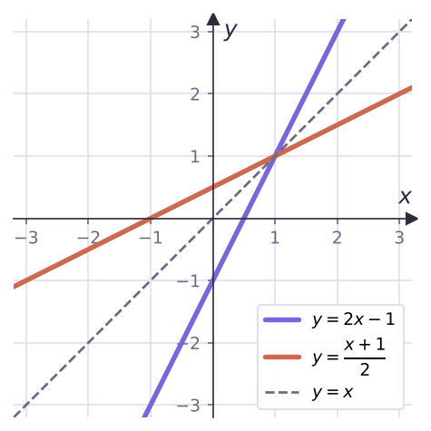
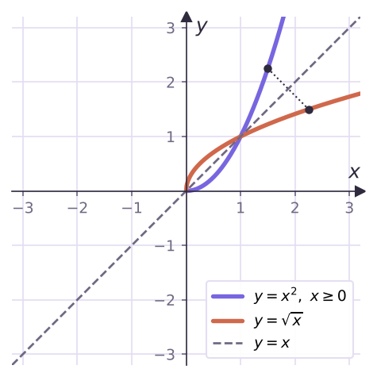

Теория
Функция по каждому x выдаёт y. Иногда нужно наоборот: по y восстановить x. Для y = 2x − 1 это легко: если y = 5, то x = 3, и так для любого y: x = (y + 1)/2. А для y = x² при y = 4 подходят и x = 2, и x = −2 — однозначно «вернуться» нельзя.
Функция называется обратимой, если каждое своё значение она принимает ровно при одном значении аргумента.
Если функция y = f(x) обратима, то функция, которая каждому y из E(f) ставит в соответствие это единственное x, называется обратной к f. Записывают f−1, а аргумент по привычке снова обозначают x.


Если функция возрастает (или убывает) на промежутке, то она обратима на нём. Обратная функция тоже возрастает (убывает).
Как найти обратную функцию
- Проверить, что функция обратима (например, монотонна).
- Выразить x через y из равенства y = f(x).
- Поменять обозначения: x ↔ y.
- Записать область определения обратной: D(f−1) = E(f), E(f−1) = D(f).
Найти функцию, обратную к y = 2x − 1.
Функция возрастает ⇒ обратима. x = (y + 1)/2. Меняем обозначения: y = (x + 1)/2.
Найти функцию, обратную к y = x³ + 1.
Возрастает на ℝ. x³ = y − 1, x = ³√(y − 1). Ответ: y = ³√(x − 1).
Графики взаимно обратных функций
Графики функции и обратной к ней симметричны относительно прямой y = x: если точка (a; b) лежит на одном графике, то (b; a) — на другом.

Найти функцию, обратную к y = x², x ≥ 0.
На [0; +∞) функция возрастает. x = √y (берём неотрицательный корень, так как x ≥ 0). Ответ: y = √x, D = [0; +∞).
Частая ошибка — забыть про область определения. Для y = √x обратная — y = x² при x ≥ 0, а не вся парабола: E(√x) = [0; +∞), и это область определения обратной.
Доказать, что f(x) = 3x + 6 и g(x) = x/3 − 2 взаимно обратные.
g(f(x)) = (3x + 6)/3 − 2 = x и f(g(x)) = 3(x/3 − 2) + 6 = x. Обе композиции дают x — функции взаимно обратные.
Задачи урока
Реши в тетради. Ответы разберём на занятии.
Из учебника
- № 131 — Устно: обратима ли функция (3x − 1, x² + 7, 1/x, √x, x⁴, x⁴ при x < 0).
- № 132 — Найти обратную: 2x − 1, −5x + 4, x³ + 1, x³ − 3.
- № 133 — Область определения и множество значений обратной функции.
- № 135 — Проверить подстановкой, что функции взаимно обратные.
Тест к уроку
Домашнее задание
№ 132, 133, 135 из учебника письменно; № 131 — устно. Построить в одной системе координат графики y = x³ и y = ³√x и прямую y = x.